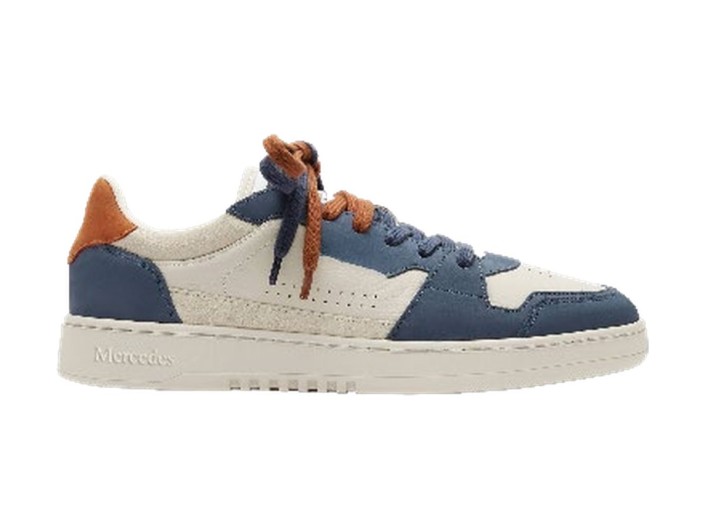
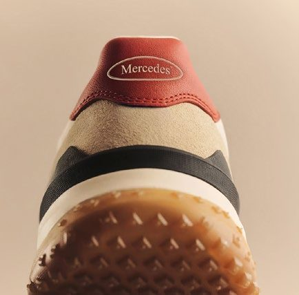
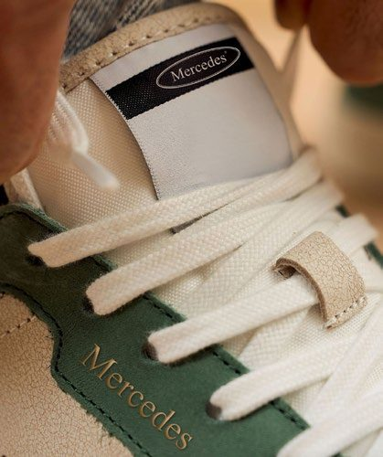
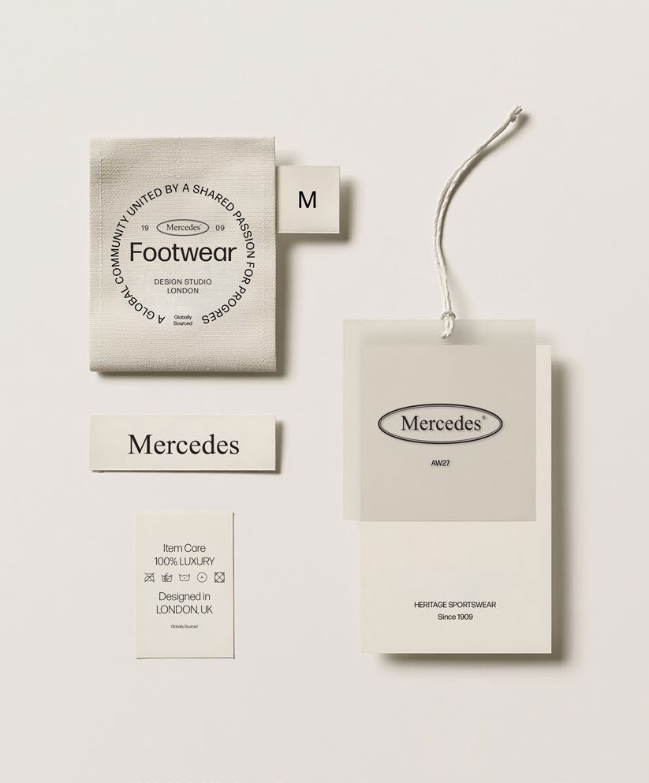
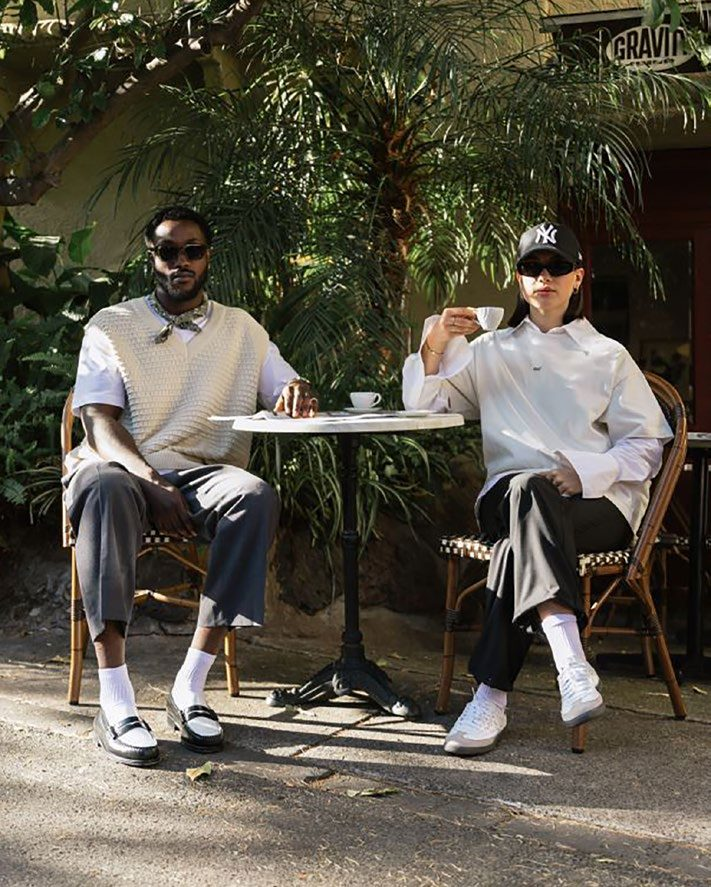
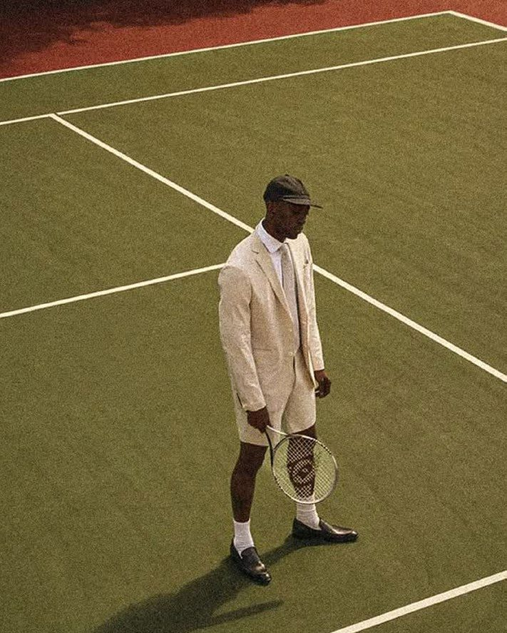
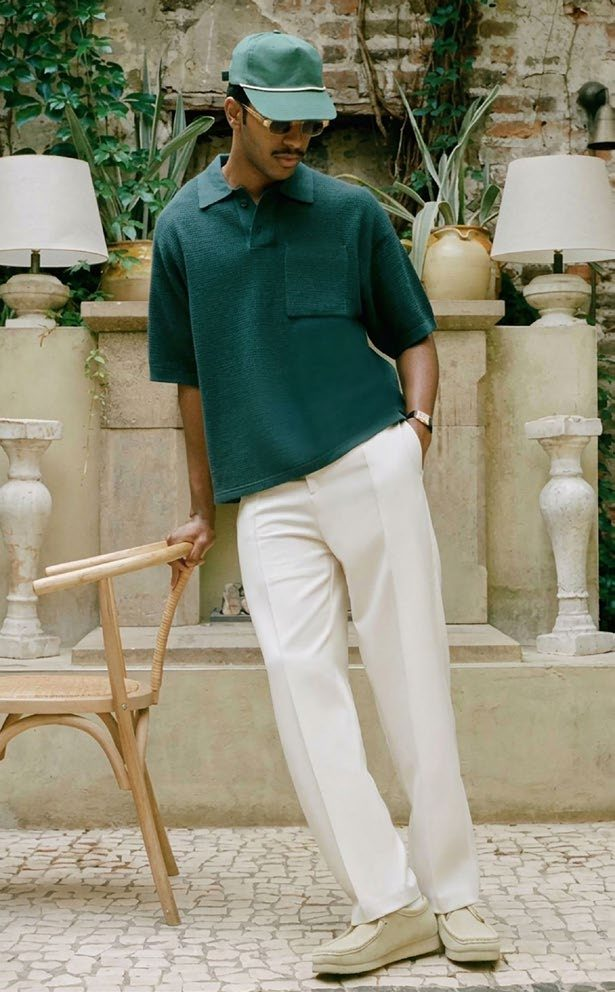

01
Court Classic, Navy
Members Only. Court-Silhouette, Wildleder-Partien, Kontrastbesatz in Cognac.
Eine europäische Traditionsmarke, die es wirklich gibt — mit einem Sortiment, das für Ihr Regal gerechnet ist. Nicht die Resteverwertung einer Premiumlinie.
Klickdummy, Stand 9. Oktober 2026. Alle Angaben stammen aus dem Mercedes-Styleguide (V2, 03.10.2026) und der DELTEX-Präsentation „Discount for Brands" (28.08.2026). Was noch fehlt, steht in Abschnitt 10.
Eine Schuhmarke mit eingetragener Historie seit 1909. Zwei fertige Kollektionen, ein abgeschlossener Styleguide, eine Preisarchitektur, die das Volumengeschäft nicht nachträglich dazurechnet, sondern von Anfang an kennt.
Der deutsche Schuhmarkt schrumpft, die Verbraucher sind vorsichtig — und ausgerechnet Sneaker wachsen. Eine bekannte Marke zu einem Preis, den man ohne Nachdenken mitnimmt, trifft genau diese Lücke.
Was das für Sie heißt: Der Fachhandel hält noch 57 Prozent — der Lebensmittel- und Discountkanal ist bei Schuhen kaum besetzt. Wer dort eine echte Marke zum Mitnahmepreis anbietet, konkurriert nicht mit dem Schuhhaus, sondern besetzt eine freie Fläche.
Vom Court Classic bis zum handgefinishten Loafer. Premium-Materialien, zurückhaltendes Branding, eine Silhouette, die auch in fünf Jahren nicht komisch aussieht.
Ehrliche Materialien, präzise Verarbeitung und Details, die man beim hundertsten Tragen noch bemerkt. Der Styleguide formuliert es als Haltung: Qualität ist kein Versprechen, sondern der Standard.
Zeitlos, nie dem Trend hinterher. Die Formensprache schöpft aus einem Jahrhundert Sport und Schneiderhandwerk — übersetzt in das, was Menschen heute tragen.
Eine Welt, zu der man gehören möchte. Verkauft wird das Gefühl von Clubhaus und Sonntagsspiel — nicht nur der Schuh.
1909 ist kein Marketingdatum. Die Marke ist in Bad Cannstatt entstanden und hat mehrere Eigentümer überdauert — das ist öffentlich dokumentiert, nicht nur im Styleguide behauptet.
Quellen: Mercedes Brand Guidelines V2 (03.10.2026) für Markenschutz und Kollektionen; Firmen- und Markenhistorie aus öffentlichen Quellen, Recherchestand 09.10.2026.
Drei Dinge nennt der Styleguide als Qualitätsmerkmale — und sie sind am fertigen Schuh nachprüfbar, nicht nur behauptet.



Vollständig spezifiziert ist im Styleguide bisher eine Ausführung — der Court Classic in Cigar Brown. Sie zeigt das Niveau, auf dem die Kollektion aufsetzt.
Die Energie der Laufkultur in der Welt des Luxus-Lifestyles. Leichte Strickobermaterialien, reaktive Dämpfung, Trail-Grip — und Signalorange neben Logo und Schriftzug, ohne die Handschrift zu verlieren.
Der Styleguide rechnet drei Preislagen und ordnet jeder einen Kanal zu. Die linke Spalte ist Ihre — sie heißt dort Sports and value retail.
| Kategorie | Volume | Contemporary | Premium |
|---|---|---|---|
| Sneakers | 35–50 € | 55–75 € | 88–123 € |
| Leder-Schnürer | 40–55 € | 60–85 € | 98–148 € |
| Loafer | 40–55 € | 60–85 € | 98–138 € |
| Boots | 45–65 € | 70–95 € | 113–163 € |
| Run Club | 35–50 € | 55–75 € | 80–110 € |
| Kanal | Sports and value retail | Multi-brand fashion | Premium department & e-commerce |
UVP-Bänder in Euro, inklusive Mehrwertsteuer. Quelle: Mercedes Brand Guidelines 2026, V2. Das sind Verkaufspreise, keine Einkaufspreise — die Kalkulation kommt mit dem Angebot.
Damit die Vorstellung konkret wird: eine Simulation der Aktionsseite mit Preisen aus dem Volumenband. Kein fertiges Angebot — eine Arbeitsgrundlage für das Gespräch.
Simulation zur Veranschaulichung. Preise aus dem Volumenband des Styleguides abgeleitet — kein Angebot des Händlers.
Die Marke ist in allen für den europäischen Handel relevanten Gebieten eingetragen — keine offene Anmeldung, keine Anwartschaft.
| Gebiet | Eintragung | Status |
|---|---|---|
| Deutschland | national, 1909 | eingetragen |
| Österreich, Benelux, Tschechien, Frankreich, Italien, Spanien, Schweiz | international, 1964 | eingetragen |
| China | international, 1999 | eingetragen |
| Vereinigtes Königreich | national, 2010 | eingetragen |
| Europäische Union | EU-Marke, 2010 | eingetragen |
Für Indien läuft eine Anmeldung.
31 Seiten, Fassung V2 vom 3. Oktober 2026. Kein Moodboard, sondern eine fertige Markenanleitung. Niemand muss die Marke erst erfinden — sie ist beschrieben, bis hin zur Naht und zum Anhänger.

Markenkern, Kundenbild und drei Werte — Qualität, Stil, Zugehörigkeit. Jeder mit einer Definition, an der man eine Entscheidung festmachen kann.
Forma als Hausschrift, Snell Roundhand ausschließlich für Kollektionsnamen und Kampagnentitel. Die Palette kommt aus den Materialien: Cigar Brown, Racing Green, Oxblood, Navy, Bone.
Oval, Wortmarke und gestapelte Fassung mit „Schuhe seit 1909" — alle auf demselben Raster, mit Schutzraum und hellen wie dunklen Varianten.

Members Only und Run Club, jeweils mit Kollektionsbild, Produktbeispiel, Materialangaben und Qualitätsmerkmalen.

Vorgaben für Shop, Mobilansicht, Anzeigen und Großflächen. Auf dem Handy zuerst die Geschichte, dann der Kauf.
Markentabelle mit Gebieten und Eintragungsjahren, dazu die Preisarchitektur je Kanal.
Ehrlich dazu: Farbwerte in HEX oder Pantone nennt der Styleguide nicht — die Palette wird über Materialien und Produktfotos gezeigt. Für Verpackungsdruck wird das nachgezogen.
CGT verbindet Lizenz und Handel. Welche Bausteine Sie brauchen, entscheiden Sie. Sie funktionieren einzeln und zusammen — und es gibt für alle einen Ansprechpartner.
Die Markenrechte für Ihre Warengruppe. Zwei Modelle stehen zur Wahl: eine kurze Laufzeit mit Exklusivität für einen klar umrissenen Kundenkreis, oder ein mehrjähriger Vertrag mit Mengenzusage. Welche Warengruppen und Territorien vergeben werden, halten wir im ersten Gespräch verbindlich fest.
Liegt fertig vor und ist Teil des Pakets. Kein Zusatzprojekt, keine Agenturrunde, kein halbes Jahr Vorlauf.
CGT nimmt geprüfte Produzenten ins Netzwerk auf und vermittelt sie. Das sichert, dass der Schuh am Ende so aussieht wie im Styleguide — und Sie müssen keinen Hersteller suchen.
Der Weg ins Regal über DELTEX: Lebensmittelhandel, Discount, Fachhandel. Mehr dazu im nächsten Abschnitt.
Für eigenen Shop und Marktplätze ist eine gesonderte Online-Lizenz vorgesehen — getrennt vom stationären Geschäft, damit sich beides nicht ins Gehege kommt.
Sie können alles nehmen oder nur die Marke. Wer schon produziert, lässt Baustein drei weg; wer nur eine Aktion fahren will, braucht Baustein fünf nicht.
CGT bringt die Lizenz. Für die Umsetzung im Lebensmittel- und Discounthandel arbeiten wir mit DELTEX Handels GmbH in Hamburg — einem Partner, der genau das seit Jahren macht und nichts anderes.
Dazu Edeka mit 6.500, REWE mit 3.800 und Penny mit 3.500 Filialen — Stand der DELTEX-Partnerübersicht vom August 2026.
So läuft eine Platzierung:
| Marke | Handelspartner |
|---|---|
| Adidas | ALDI |
| Nike | ALDI |
| PUMA | ALDI |
| Under Armour | ALDI |
| Scotch & Soda | ALDI |
| NFL | ALDI |
| BOSS | LIDL |
| Armani | LIDL |
| Diesel | LIDL |
| Reebok | LIDL |
| NBA | Kaufland |
Insgesamt nennt die DELTEX-Übersicht über 30 Marken im Lebensmittel- und Discountkanal, darunter Bench, Camp David, Ellesse, Jack & Jones, MEXX und CR7.
Genau dagegen ist die Preisarchitektur gebaut. Der Styleguide definiert drei getrennte Preislagen mit je eigenem Kanal — das Volumenband ist keine Ausnahme, sondern eine geplante Lage. Dazu kommt bei DELTEX das Prinzip Exclusive SMU: eigene Designs, Farben und Multipacks, die vom Kernsortiment der Marke klar getrennt sind.
Ja, und zwar eingetragen, nicht nur angemeldet: Deutschland seit 1909, die großen europäischen Märkte seit 1964, China seit 1999, Großbritannien und die EU-Marke seit 2010. Die vollständige Tabelle steht weiter oben.
Der Styleguide ist auf 2027 datiert und die Marke sucht ausdrücklich Lizenzpartner in der EU, Großbritannien, China, Indien und den Golfstaaten. Eine bestehende Handelsdistribution ist uns nicht dokumentiert — wer jetzt einsteigt, ist früh dran.
Das ist offen. Ein Freigabeprozess ist im Styleguide nicht beschrieben, und er gehört zu den Punkten, die wir vor einer Listung schriftlich festhalten. Wir sagen das lieber vorher als nachher.
Liegt uns nicht vor. Produktionsstandort, Mindestabnahme und Wiederbeschaffungszeit klären wir im ersten Gespräch und liefern sie mit dem Angebot.
Diese Punkte sind bewusst nicht gefüllt, weil es dazu keine Quelle gibt. Sie gehören ins erste Gespräch — nicht auf eine Hochglanzseite:
Muster, Kalkulation und Liefertermine klären wir in einem Termin — kurzfristig und ohne Umwege.
Thomas Goetz · CGT UG